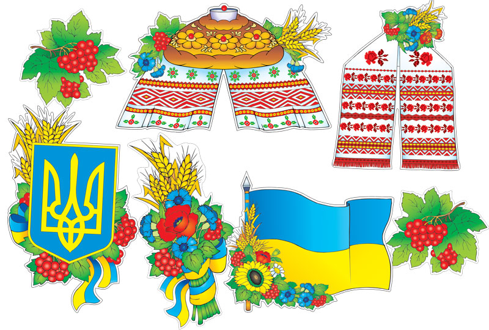
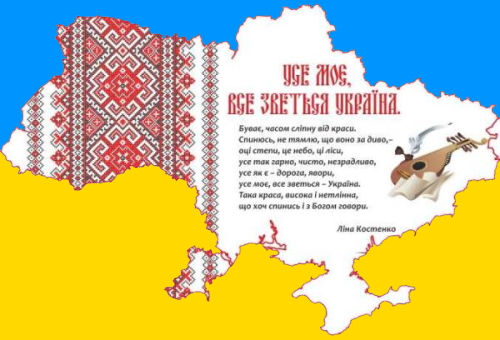
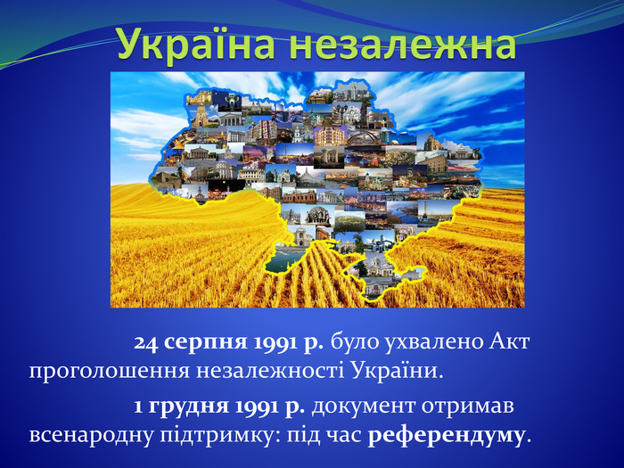
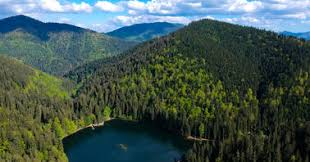
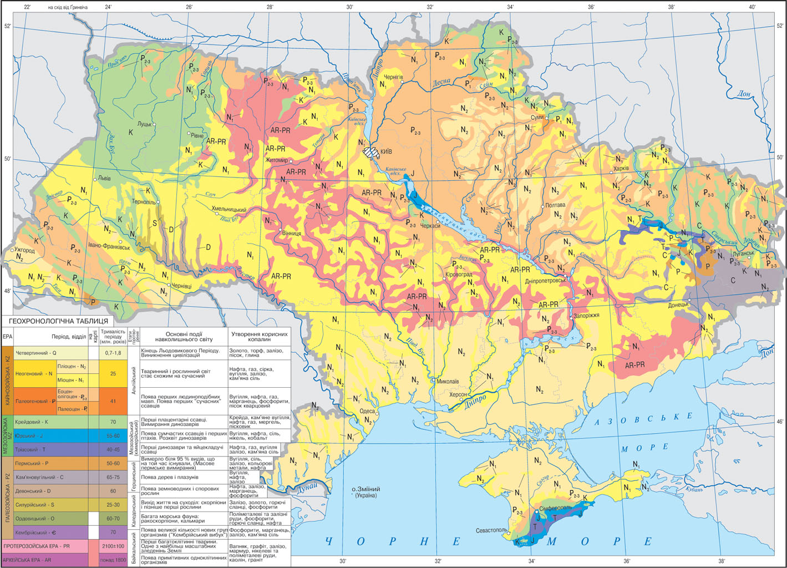
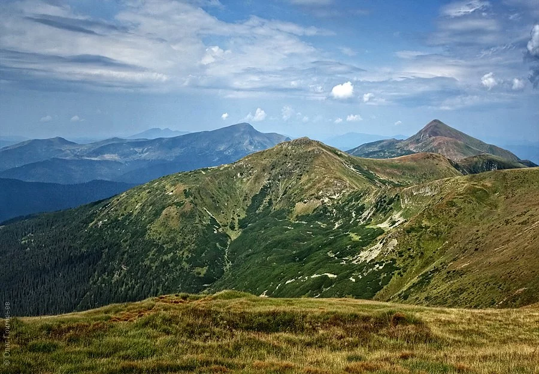
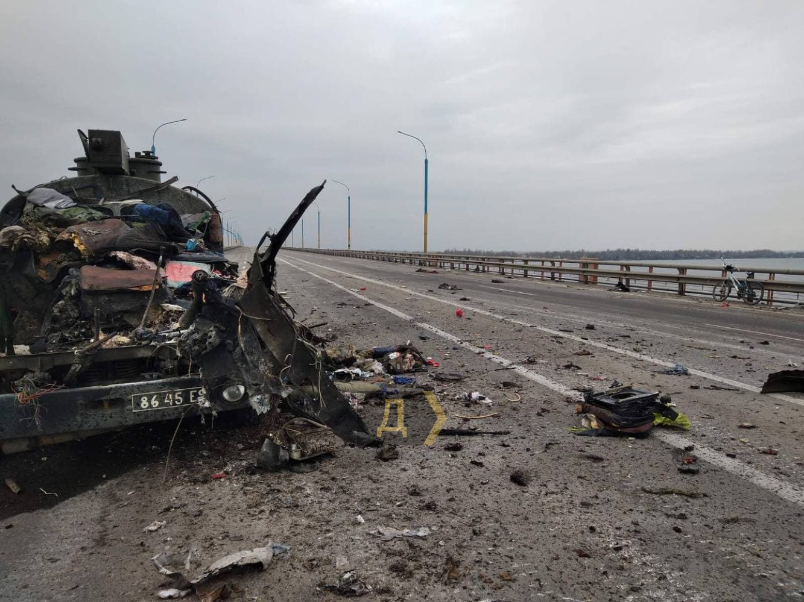
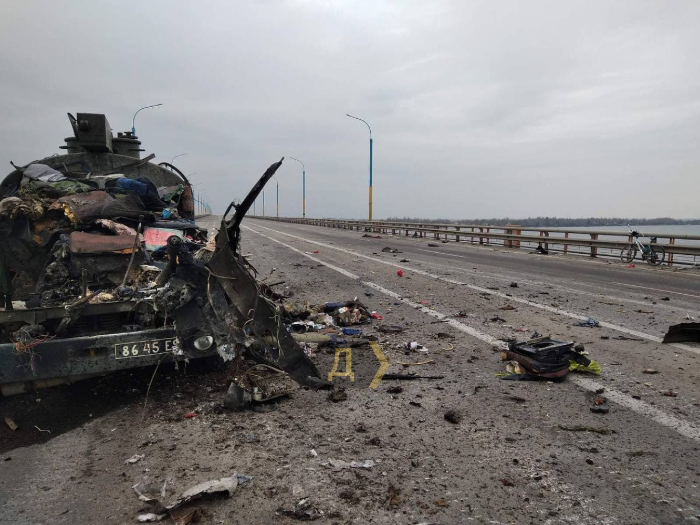

Про Україну
Загальна інформація
Україна – це найбільша країна в Європі, яка розташована в Східній Європі. Вона має вихід до Чорного та Азовського морів. Україна межує з Росією на сході, Білоруссю на півночі, Польщею, Словаччиною, Угорщиною на заході та Румунією і Молдова на південному заході.
Історія України
Історія України налічує тисячі років. Від перших цивілізацій, таких як Трипільська культура, до Київської Русі, яка була важливим центром середньовічної Європи. У 1991 році Україна здобула незалежність після розпаду Радянського Союзу.
Географія та природа
Україна має різноманітний ландшафт – від гір Карпат на заході до степів на сході. В Україні розташовані численні річки, озера та природні заповідники. Найвищою точкою є гора Говерла в Карпатах.
  Культура та традиції
Україна відома своєю багатою культурною спадщиною. Вишиванка – це один із найвідоміших символів України. Також Україна славиться своїми народними піснями, танцями та фестивалями.

Сучасна Україна
Близько четвертої години за київським часом (UTC+2) 24 лютого 2022 року президент Російської Федерації В. Путін оголосив про «спеціальну воєнну операцію» з метою нібито «демілітаризації та денацифікації України». Уже за кілька хвилин почалися ракетні удари по всій території України, у тому числі неподалік від Києва. Російські війська вдерлися до України поблизу Харкова, Херсона, Чернігова, Сум, увійшовши з Росії, Білорусі й тимчасово окупованого Росією Криму. Разом з Росією війну проти України фактично веде Білорусь: із прикордонних районів завдають ракетних ударів по території України, здійснюють вильоти бойової авіації для завдання ракетно-бомбових ударів по території України, відбувається передислокація війська та його забезпечення
Завдяки спротиву української армії та сил самооборони вже в перші дні агресії російська армія зазнала значних втрат у живій силі та техніці. У своїй новітній історії, за оцінками українських та міжнародних експертів, Росія в жодній війні ще не зазнавала навіть приблизно таких великих втрат за такий короткий час. За визнанням західної розвідки, Росія зустріла сильніший, ніж очікувала, опір, що зумовило матеріально-технічні проблеми для її військ, нестачу пального, боєприпасів і продовольства, підрив бойового духу нападників. Швидке об'єднання країн світу для допомоги Україні, як і запровадження потужних санкцій проти Росії, стало несподіваним ударом для країни-агресора. З першого дня вторгнення Росія порушує правила ведення війни і масово чинить воєнні злочини. Крім того, російська влада веде активну інформаційну війну та застосовує шовіністичну пропаганду.
Сьогодні ситуація в Україні залишається складною. Війна продовжується, і країна зіткнулася з багатьма викликами. Багато українців змушені були покинути свої домівки, і країна продовжує отримувати міжнародну підтримку. Це складний час для України, і багато людей працюють над відновленням миру та стабільності.
 
